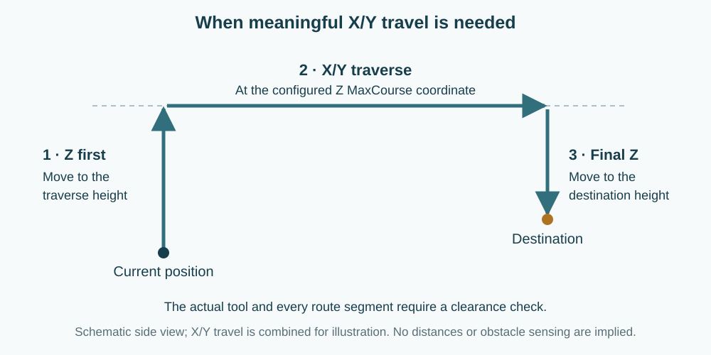

RADONIX · ROUTERXYZ+TC · CHAPTER 9
Operator Manual · English · 8 October 2026
Positioning, Return to Work and Parking
Choose the destination, understand the complete route, and know whether arrival ends the operation or hands control back to the machining program.
Expanded draft for review. This chapter describes the application's managed positioning commands. Illustrations are conceptual; the actual tool, fixtures, travel settings and approved machine procedure determine whether a route is suitable.
9.1 Choose the destination and what should happen afterward
A positioning command requests an automatic route to a defined destination. Unlike a held jog, it is not controlled by how long you keep a button pressed. Once accepted, it can carry out several movements in sequence after a single request.
The application provides four related commands: Go Home, Go Ref, ReturnToWork and GoToPark. They share route-building behaviour but choose their destinations differently. ReturnToWork has a further consequence: a successful return can start or resume the retained machining program without another Run request.
| Operator command | Destination | What follows successful positioning |
|---|---|---|
| Go Home | Machine X/Y/Z zero. | The positioning operation ends; it does not itself start the main program. |
| Go Ref | The applied work-path reference plus current tool and live corrections. | The positioning operation ends; it does not itself start the main program. |
| ReturnToWork | The machine position currently required by the retained machining path. | The return mechanism can hand execution back to the main program automatically. |
| GoToPark | The configured X/Y/Z machine-coordinate parking values. | The positioning operation ends without starting the main program. |
Home is a different command: it performs sensor-based homing to establish the machine reference. Go Home uses an already established reference to travel to machine zero. See Chapter 6 if the distinction is unfamiliar.
These commands also differ from Goto X, Goto Y and Goto Z. The latter are single-axis manual destination commands, described in Chapter 7. Do not assume they use the multistage route described here.
Know the actual access point
The main window has Go Home and Go Ref controls. ReturnToWork and GoToPark are available in the configurable command/shortcut catalog; the reviewed layout does not require a dedicated visible button for each. Use only the approved access or assigned shortcut for your installation. This chapter does not invent a universal key combination.
In command lists and reports, the reference command may appear as GoToReference, and the home-positioning command as GoHome. Those identify the operations associated with the main-window captions.
Before issuing any of them, answer two questions: where will the tool/head go, and can the machining program start after arrival? The second question is essential for ReturnToWork.
9.2 Prepare the whole route and the operation that may follow
Prepare for the entire operation before issuing a positioning command. The application does not ask for another click between a Z movement, horizontal travel and the final Z approach. ReturnToWork can also proceed into the machining program when its handoff succeeds.
Confirm operator access, the intended Simulation or Normal connection and complete-machine homing. All configured motors must be homed, including the second gantry motor. Required axes must be ready, stopped and available, with the expected gantry pairing. Other movement paths must be idle.
These conditions are checked again when the command is requested. A control that appeared available can still reject a request if the state changed. Read the actual response rather than assuming that a click guarantees movement.
| Check | What to establish |
|---|---|
| Command and purpose | You have selected the intended destination, and know whether machining may follow. |
| Reference state | Complete homing is valid. The relevant work reference and tool corrections are correct where the destination uses them. |
| Current physical position | The tool can leave its present location through the commanded first movement. |
| Horizontal route | The whole traverse is clear for the actual tool, holder, head, bridge and fixtures. |
| Final height | The final Z position and approach are appropriate, including any surface or material near the destination. |
| Speed | The configured traverse speed is approved for the operation; jog settings are not assumed to control it. |
| Next action | For ReturnToWork, the retained program and starting state are ready for execution. |
| People and stopping | The area is prepared and you know the required stopping response from the operating position. |
A valid coordinate is not a clear route
The software validates the current point, destination and route waypoints against the configured travel and drive-position range, including the coupled gantry motor. It does not inspect the physical shape of clamps, material, hoses or accessories.
A route may fit inside machine travel while crossing an obstruction. A final coordinate may be numerically valid while the cutter would enter the workpiece at that point. Check the physical setup independently of the command's availability.
Understand why an available-looking destination command may be disabled
Go Home, Go Ref and GoToPark can be unavailable when the current commanded position is already within the configured axis tolerances of their destinations. That does not necessarily indicate a fault. ReturnToWork is different because it may still need to hand execution to the program even when little or no visible repositioning is required.
Other causes include incomplete homing, an active or stopping operation, an axis or gantry fault, unavailable path resources or invalid motion configuration. Investigate the current state instead of switching to a different command as a workaround.
Remain at the operating position after starting. A short stop between route stages is not the end of the operation and does not authorize entering the movement area.
9.3 Understand the Z-first route and its limits
When X or Y must move, the positioning route raises Z if necessary, traverses at that height, then moves Z to the destination. Each stage stops before the next.
General → Safe Z sets the minimum traverse height in machine coordinates. The initial value of zero and values outside Z travel select Z MaxCourse. A head already higher than the selected height traverses at its present Z. Set the height for the actual tool, workpiece and clamps.
Approach Distance and Approach Velocity in General control the slow final move to the programmed start or resume point. The defaults are 10 millimeters and 5 millimeters per second. A shorter available final leg uses approach speed from its start.

| Stage | Commanded behaviour | Physical check |
|---|---|---|
| Initial Z movement | Keep the starting X/Y and raise Z to Safe Z if needed. | The tool and head can leave the current location along that Z route. |
| Horizontal traverse | Move to destination X/Y at the configured traverse height. | The full horizontal route is clear for the actual assembly and surrounding equipment. |
| Final Z movement | Keep destination X/Y and move to destination Z. | The final approach and endpoint are suitable; do not assume it stops above the material. |
When no horizontal movement is needed
If the X/Y differences are below the configured axis tolerances, the application treats the move as not requiring horizontal travel. It keeps the current X/Y and moves Z directly to the destination height. It does not first go to MaxCourse and then return merely because you used a positioning command.
This explains why two requests for the same type of destination can look different from different starting positions. The route depends on the current position as well as the destination. A change too small to be treated as a horizontal move is not a reason to alter the machine tolerances during ordinary operation.
A planned route is not collision detection
The application checks route points against configured travel and representable drive positions. It does not build a three-dimensional model of every physical obstruction, and it does not detect whether a tool is trapped beneath an overhang. Calling a coordinate a traverse height does not establish clearance for every job.
Likewise, a stop between stages is part of normal sequencing. It is not permission to reach into the machine, move a clamp or make an adjustment before the next stage. The operation continues automatically.
Do not change MaxCourse simply to make a particular positioning attempt appear convenient. It is part of machine configuration and affects more than this one route. Have an unsuitable route or machine setting assessed through the authorized procedure.
9.4 Check the positioning speed and issue one request
These positioning routes use the configured TraverseVelocity, expressed in millimetres per second. They do not take their speed from the individual X/Y/Z jog V fields or the jog percentage. A low manual-jog setting therefore does not establish that Go Home, Go Ref or parking will use that same speed.
TraverseVelocity is found under General in Configuration. It is also used for program traverse preparation, so changing it is not merely a private adjustment for one positioning button. Use the approved value and follow any Configuration message about the prepared program when a change is authorized.
| Value or control | Relevant use |
|---|---|
| TraverseVelocity | Supplies the speed captured for the managed positioning route described here. |
| Axis jog V and jog percentage | Prepare manual jog and single-axis Goto movement, as described in Chapter 7. |
| Main machining-feed percentage | Controls the main machining path; it is not an all-motion stop for the separate positioning route. |
| Displayed movement speed | Presents an estimate of combined commanded movement; it may differ during acceleration or stage transitions. |
Values are captured for the request
The route is built from the current commanded position, resolved destination and selected traverse speed when the request is accepted. For parking, all three saved parking coordinates are captured for that route. Editing a setting afterward is not a method for redirecting an already queued movement.
The requested speed must be finite and positive, and machine motion limits still apply. Short legs, acceleration and stopping between stages can make the observed speed lower than the requested value. Do not increase a setting simply because one short move did not appear to reach it.
- Identify the command and destination.
Check the whole setup and whether a machining continuation can follow.
- Confirm the approved traverse configuration before motion.
If an authorized change is needed, make and accept it through Configuration while the machine is appropriately settled.
- Issue the intended command once.
Use the main-window control or the documented configured access. These are finite operations; releasing the button or shortcut does not cancel the accepted route.
- Observe all stages and the reported result.
An accepted request is not arrival. Stay attentive through the final Z movement and, for ReturnToWork, the possible program start.
Use the stopping controls described later in this chapter if interruption is necessary. Do not try to stop positioning by changing the jog percentage or lowering the main-program feed percentage.
If the request is rejected, read the cause before trying again. Repeated clicks do not repair invalid travel, incomplete homing or unavailable axes, and can make it harder to identify which request actually started.
9.5 Use Go Home to request machine zero
Go Home resolves its destination to machine X zero, Y zero and Z zero. It does not search for sensors or establish a new machine reference. Complete the required homing and setup checks before using it.
The position at which sensor homing finishes is determined by the configured homing coordinates and displacements. That final position need not be machine zero. Consequently, Home and Go Home can finish at different physical locations even on a correctly configured machine.
| Question | Relevant operation |
|---|---|
| Establish the machine reference from its sensors | Home. |
| Move to machine coordinate zero using the established reference | Go Home. |
| Move to the job's work-reference location | Go Ref, after verifying its applied reference and corrections. |
| Move to a defined parking location | GoToPark, after verifying its stored machine coordinates. |
- Confirm that machine zero is the intended destination.
Use the installed machine documentation to understand that location, especially its Z height. Do not infer it from the word home.
- Verify homing, readiness and the complete route.
Check the initial Z movement, horizontal traverse and final approach where applicable.
- Check the positioning speed configuration.
The route uses TraverseVelocity, not the manual-jog V fields.
- Press Go Home once.
Observe the route without treating a pause between stages as completion.
- Verify the result.
Check the positioning completion report and settled Machine position. The command does not itself start the main machining program.
Do not infer clearance from the numeral zero
Machine Z zero may be low in the machine's working range. When horizontal travel is required, the route can first visit the configured traverse height and then move down to machine Z zero. That final movement is part of the requested operation, not an optional extra step.
If machine zero lies outside valid configured travel or the route fails another validation, the request is rejected rather than making zero valid by changing the machine settings. Do not alter limits simply to enable this command.
If all relevant commanded coordinates are already within the configured tolerances of zero, the control can be unavailable because no positioning is required. Read the Machine position and current state before concluding that the button has failed.
Reaching machine zero does not establish that the spindle is stopped or that access to the table is permitted. Use the installed stopping and access procedure for unloading, inspection or maintenance.
9.6 Use Go Ref with the applied work reference and tool correction
Go Ref, also identified as Go Reference or GoToReference, requests the location of the applied work-path reference with its current tool and live corrections. It does not set a new work origin, measure the material or perform homing.
For each axis, the machine destination is the applied reference coordinate plus the applicable tool offset and live correction. This is the inverse relationship of the work-position display. Where this reference is the frame used by that display, arrival corresponds to work zero within the configured positioning tolerances.
| Axis | Applied reference | Tool/live correction total | Machine destination |
|---|---|---|---|
| X | 400 mm | 0 mm | 400 mm. |
| Y | 200 mm | 0 mm | 200 mm. |
| Z | 100 mm | 50 mm | 150 mm. |
The example explains the arithmetic only. It does not establish a suitable destination for your actual tool. A change of applied tool correction can change the machine-coordinate destination even when the stored job origin is unchanged.
The applied reference may differ from the initial selector
A loaded machining file can explicitly use another work reference or several reference systems. The positioning command reads the reference currently applied to the prepared work path. Do not assume that its destination always comes directly from whichever G54–G59 row you most recently selected or inspected in Configuration.
For a simple file explicitly using G55, for example, the prepared path can use G55 independently of an initial G54 selection. For more complex files, the prepared path's reference representation needs to be understood through the job's setup and preview. Review Chapter 8 before using Go Ref with an unfamiliar multi-origin job.
- Identify the applied job reference.
Confirm the file's requirements and accepted origin values. Finish any preparation or reference update first.
- Confirm the actual tool and correction.
Do not use an unverified tool length or a stale correction to position the tool tip at a job datum.
- Check the complete route and final point.
Include the last Z movement. Work zero may be on a material surface or another low datum, not a clearance point.
- Issue Go Ref once.
Observe the route and use the appropriate stop if anything differs from the approved expectation.
- Verify completion.
Read the settled coordinates and result. The managed Go Ref route does not itself start the main machining program.
If the result is unexpected, stop further movement and check the applied reference, tool correction and job preparation. Do not change an origin merely to make Go Ref arrive at a more convenient point; use the correct positioning task and approved destination.
9.7 Treat ReturnToWork as a program start or continuation
ReturnToWork is not a harmless inspection move. It returns toward the position currently required by the retained machining path and, after successful alignment and handoff, can start or resume that path automatically. Prepare for machining before requesting it, not after the return movement finishes.
The retained position is the machine-coordinate position associated with the current prepared program state. It is not simply the last location you remember cutting, the work origin or the point where the head happens to be parked. Loading, resetting, changing the prepared start or changing relevant coordinate information can affect what position is required.
How a return can begin
A normal Run request can discover that the head is not at the required program position. The application can then use the return-positioning mechanism as part of starting the job. The operator should therefore expect a Run request to initiate preparation or positioning before ordinary cutting movement.
The separate ReturnToWork command also exists in the command catalog. Do not use it as a shortcut around the normal job-start procedure or to apply an unprepared line selection. A newly highlighted line does not by itself prove that the retained return destination and tool state have been prepared for that line.
| Stage | Meaning for the operator |
|---|---|
| Start preparation through the normal Run workflow | The application may prepare a required entry tool before entry positioning. Observe any tool operation as part of the start sequence. |
| Return positioning | The head follows the managed route to the retained work-path destination. |
| Stopped/alignment checks | The return mechanism checks readiness and position before handing execution back. |
| Successful handoff | The main machining path can start without another Run click. |
| Rejected or interrupted handoff | Read the result and reassess the state. Arrival near the expected point is not proof that machining has resumed. |
- Confirm the correct job and intended starting state.
Resolve the file, selected start, prior Pause/Reset/Reset and any preparation changes through the approved execution procedure.
- Prepare for the machining that may follow.
Verify material, fixtures, references, required tools, spindle-related job setup and the whole return route.
- Use the approved start or continuation control once.
Know whether you are requesting normal Run preparation or an explicitly authorized direct ReturnToWork operation.
- Observe the entire sequence.
Do not enter the area when return positioning stops; that stopped interval can precede the program handoff.
- Check whether execution actually started.
Read current program state and the operation report. A return-completed handoff entry means execution was handed to the main program, not that the machining job has finished.
The internal handoff routine is named M100 in reports. An operator may need to quote that name when reporting a rejection, but does not need to edit or run the routine independently. Its readiness and alignment checks are part of the return mechanism.
If the tool, workpiece or reference changed during an interruption, retaining the program's place does not establish a valid continuation. Complete the required recovery and setup checks first. Use the stopping and recovery chapter and the selected-start chapter for those execution decisions.
9.8 Set up and request manual parking
GoToPark moves to the stored parking coordinates for X, Y and Z. These are absolute machine coordinates, independent of the work reference and tool offsets. Parking does not mean finding an empty space automatically or moving to the last position used for unloading.
The settings are under General → X → Park Position, General → Y → Park Position and General → Z → Park Position. The underlying setting name may appear as ParkPosition. The operator groups contain X, Y and Z; there is no separate ordinary YG parking coordinate to adjust.
| Setting | Meaning | Do not confuse it with |
|---|---|---|
| X Park Position | Final machine X coordinate. | A distance to move from current X. |
| Y Park Position | Final machine Y coordinate. | A workpiece-origin coordinate. |
| Z Park Position | Final machine Z coordinate after any horizontal traverse. | The intermediate Safe Z traverse height. |
| Park Enabled | Controls the automatic completion-parking feature. | A requirement to permit an otherwise valid manual GoToPark request. |
The supplied parking values initially default to zero. That is a configuration starting value, not an approved parking location for every installation. Verify all three coordinates against the intended machine arrangement before using manual or automatic parking.
- Obtain the approved parking coordinates.
Confirm that the location suits the machine, current tool and expected fixtures. A park location suitable for one tool projection may not suit another.
- Inspect or edit the three values while appropriately stopped.
Use authorized Configuration access, confirm each complete machine coordinate and finish the Configuration transaction deliberately.
- Check the current-to-park route.
Include the first Z move, horizontal traverse when needed and final Z parking height. Parking does not inspect spindle rotation.
- Issue GoToPark through its approved configured access.
The command is available in the shortcut catalog without a supplied default key assignment. Do not guess a shortcut.
- Observe completion and verify the final state.
Read the report and settled Machine position. Complete the required spindle and access checks before approaching the machine.
Machine coordinates do not include the tool's projection
Changing work zero does not move the stored parking destination. Changing the active tool correction does not add that correction to Park Position either. The head's commanded machine destination is the stored value, but the physical tool attached to that head can differ in length and shape. Check actual tool clearance.
FIGURE 9-2 · SETTINGS SCREENSHOT REQUIRED
Parking configuration and automatic-parking selection
Supply an English Configuration view showing General, Park Enabled, TraverseVelocity and the X/Y/Z Park Position values. Label the final Z parking coordinate separately from the Safe Z traverse coordinate.
Suggested image: assets/images/09-parking-settings.png. Identify illustrated values as installation-specific examples, not recommended defaults.
GoToPark does not append the return-to-work handoff or start the main program. It also does not stop the spindle as part of this route. Establish the required spindle state through the approved operating procedure.
9.9 Understand parking after normal program completion
Park Enabled under General controls automatic parking after the application accepts a normal completion of the main machining program. The supplied default is off. When enabled, a qualifying completion requests GoToPark once using the ordinary parking destination, readiness checks and route validation.
This means the last cutting movement is not necessarily the last machine movement. If automatic parking is enabled, remain attentive after the program finishes and expect the parking route if its request is accepted.
| Observed situation | Parking behaviour |
|---|---|
| Current program is reported completed normally and Park Enabled is on | The application requests parking once, subject to readiness and route validation. |
| Park Enabled is off | No completion-triggered parking request is made. |
| Program stopped after a requested stop | This does not trigger automatic parking. |
| Observed fault or unknown termination | This does not trigger automatic parking. |
| An obsolete completion belongs to an earlier program/start state | It is not treated as a current completion-parking trigger. |
| The one parking request is rejected | The rejection is reported; it is not silently retried later. |
Prepare the final move before starting the job
Before a job that will park automatically, verify Park Enabled, all three parking coordinates, the expected final tool and the complete route from the job's finishing region. Do not wait until the last cutting line to decide whether the saved parking setup is suitable.
Include the final parking Z height in the check. The intermediate raised traverse does not remove the need to verify the final approach. If a different tool remains fitted at the end of this job, reassess its physical clearance rather than reusing yesterday's assumption.
Parking does not manage spindle shutdown
The automatic-parking trigger does not inspect spindle rotation and does not issue a spindle-stop command. Spindle sequencing belongs to the machining program and installed operating procedure. A completed program indication or a moving park sequence must not be treated as proof that the cutter has stopped rotating.
If automatic parking does not occur
Read the program termination report and any positioning message. A requested stop or uncertain result does not qualify as normal completion. Even after a qualifying completion, parking can be rejected because the axes are not available, a destination is invalid or the head is already at the parking destination within tolerance.
Do not assume the application is waiting to retry automatically. The completion is consumed before the parking attempt. If a new manual park is required, resolve the cause and issue it deliberately under the manual-parking procedure.
Turning Park Enabled on after a completed event has already been handled is not a command to move immediately. Similarly, turning it off is not the stop control for a parking route already in progress. Use the proper stop if interruption is necessary.
The reported completion is a software observation, not a separate inspection of the workpiece or a certificate of physical machine condition. After parking, still verify the result and follow the machine's spindle, unloading and access procedures.
9.10 Stop positioning and reassess before another request
Positioning is a finite automatic operation. Releasing the button or shortcut does not cancel the route already accepted. If an ordinary interruption is required, use the application's appropriate all-motion stopping control. For immediate danger, use the installed emergency response.
Both Pause and Reset request stopping of all motion. They also cancel pending positioning continuation. Their distinction concerns the main machining program: Pause retains its cursor, while Reset requests its reset after stopping. Neither action is a promise that an interrupted positioning route can later continue from the same stage.
| Action or event | Operator interpretation |
|---|---|
| Release a positioning button | The finite accepted route is not cancelled by release. |
| Pause | Requests all-motion stopping and cancels pending positioning continuation while retaining the main program cursor. |
| Reset | Requests all-motion stopping, cancels continuation and schedules main-program reset. |
| Connection or relevant path state changes | The pending return continuation can be invalidated. Establish the current machine and program state before further action. |
| Positioning stops before its end | Do not assume arrival or successful return handoff. |
- Issue the required stopping response.
Do not rely on a feed slider, changing Park Enabled or closing a window as the stop procedure.
- Observe until the movement and stopping response settle.
An accepted stop request is not instantaneous standstill. Follow the emergency procedure if the expected response is absent or danger develops.
- Identify where the operation stopped.
Record whether it was on the initial Z leg, horizontal traverse, final Z leg or return handoff.
- Check both positioning and machining state.
For ReturnToWork, establish whether the main program had already started. Use current indications and messages rather than the stage you last remembered.
- Resolve the reason for interruption.
Recheck the actual position, tool, references, destination and route before preparing a new request.
A new request builds from a new starting point
After an interrupted Go Home, Go Ref or parking move, a new accepted request resolves its route again from the current commanded position. It is not a “continue leg two” instruction. Depending on the new X/Y relationship, the route may differ from the first attempt.
After an interrupted return, use the approved program recovery procedure. Reset may have rewound the main program's place; Pause may have retained it, but the physical setup still needs verification. Do not press ReturnToWork repeatedly to discover which program state remains.
The return mechanism checks for changes in the prepared path and coordinate state so that an obsolete continuation is not treated as current. This does not replace the operator's responsibility to verify the job after a reset, reload, tool change or physical disturbance.
Travel stopping does not itself stop all auxiliary equipment or establish that the spindle is stationary. Follow the access procedure before approaching the machine. If machine reference or mechanical condition is uncertain, obtain the required inspection and homing recovery before another automatic movement.
9.11 Read positioning messages and resolve a refused or incomplete move
When a positioning operation does not behave as expected, first establish whether it was refused before movement, interrupted during movement, or completed but unable to start the machining program. These situations require different responses. Repeating the same command without understanding the message can cause a new movement as soon as the blocking condition disappears.
Read the current attempt as a sequence
The report can contain several positioning attempts. Identify the most recent one by its time and command name, then read the following messages in order. An earlier completion does not describe a later request. Keep enough surrounding messages to show a stop, connection change or program operation that happened between them.
Positioning requested records a request. Positioning accepted records the accepted start and destination coordinates and speed; it does not mean the head has arrived. Positioning completed indicates the positioning operation reached its completion condition. Positioning cancelled indicates that the pending operation was cancelled; use its accompanying explanation to understand why.
The report uses command identifiers such as GoToReference for the action labelled Go Ref on the main window. Recognizing that name is sufficient; the operator does not need to know how commands are implemented.
| What you observe | What to check | Appropriate response |
|---|---|---|
| The positioning control is unavailable | Connection, completed homing, stopped axes, axis faults, other active operations and current destination. | Identify the unavailable prerequisite. Being already at a non-return destination within tolerance can also make the command unavailable. |
| The request is rejected with a travel or coordinate explanation | The intended destination and intermediate traverse height, using machine coordinates. | Have the setup corrected through the authorized procedure. Do not enlarge travel limits merely to admit the move. |
| Go Ref does not match the work-origin row you expected | The reference actually applied to the prepared program and the active tool corrections. | Reconcile the prepared job with the intended work origin before requesting movement. |
| The head moves only vertically | Whether X and Y are already within destination tolerance. | A direct Z move can be the intended route. Check its entire vertical path and final height. |
| Automatic parking did not happen | Park Enabled, the program termination reason and any rejected parking request. | Resolve the cause. There is no automatic retry waiting for a later opportunity. |
| The head returns near the work position but cutting does not begin | The return handoff message, main-program readiness and any intervening stop. | Keep the machine stopped while the cause is established. Near the destination is not proof that the handoff checks passed. |
| A cancellation follows movement | The current position, stopping state, program state and accompanying reason. | Treat arrival and continuation as unconfirmed. Reassess before a new command. |
Understand a return handoff result
ReturnToWork uses a machine-control routine named M100 to transfer execution to the main machining program. If that name appears in a message, it refers to the final start check after returning. It is not an instruction to open an editor or change the routine.
| Result | Meaning for the operator | What follows |
|---|---|---|
| 0 | The routine successfully issued the main-program start. | Expect machining execution. This is not a message that the machining job has finished. |
| 1 | A busy, stopped or unsuitable program/path condition prevented the handoff. | Review current job readiness and preceding stop messages. |
| 2 | The axes were unavailable or an axis/coupling fault prevented the handoff. | Follow the fault and recovery procedure; do not bypass the check. |
| 3 | The current commanded position did not pass the alignment check against the program's required return position. | Have position, references and tool correction checked before another attempt. |
These meanings apply to the supplied routine. An installation with an authorized customized routine needs corresponding machine documentation. A stopped or failed routine must also be read with its exit reason; a number alone does not describe every failure.
A result-3 message may include observed alignment information gathered after the routine ended. Preserve that information for support, but do not treat it as an exact measurement of the earlier instant when the routine rejected the handoff. Do not alter axis step, tolerance, coupling or work zero simply to make a check pass.
FIGURE 9-3 · REPORT SCREENSHOT REQUIRED
One positioning attempt in the report
Supply an English report view showing a genuine positioning request, its accepted coordinates and speed, and the resulting completion or cancellation. Include timestamps and enough surrounding context to associate the messages with one attempt.
Suggested image: assets/images/09-positioning-report.png. If illustrating ReturnToWork, label a successful handoff as the start of main-program execution, not job completion. Use a recorded or approved demonstration; do not create a machine fault to obtain this image.
Give support a usable description
Record the requested action, whether movement started, the stage reached, the current Machine coordinates, the fitted tool and the relevant work-origin or parking values. Include the exact report text and say whether Pause, Reset, a connection change or a program reload occurred. Describe the physical observation separately from what the screen reported.
If the coordinate readings, physical position or stopping behaviour cannot be reconciled, leave the operation stopped and obtain assistance. A clearer report is more useful than repeated attempts that change the evidence.
9.12 Work through a positioning example and check your understanding
Use this example to practise predicting the complete movement before pressing a control. The numbers describe an imaginary installation. They are not parking recommendations and must not be entered into a real machine merely to reproduce this exercise.
Example: moving from the work area to a parking point
Assume the head is stopped at Machine X = 100 mm, Y = 200 mm and Z = 50 mm. The authorized parking destination is X = 500 mm, Y = 300 mm and Z = 80 mm. On this imaginary machine, the configured Z MaxCourse is 200 mm. All points are within the approved travel ranges and the actual tool assembly has been checked against the entire route.
X and Y must change, so parking is not one diagonal movement directly to the final point. The application first requests the Z traverse coordinate, then moves across, then requests the final parking Z. The route is prepared before motion begins.
| Stage | X (mm) | Y (mm) | Z (mm) | What the operator checks |
|---|---|---|---|---|
| Starting position | 100 | 200 | 50 | The current position is understood and the first vertical route is clear. |
| End of initial Z movement | 100 | 200 | 200 | The head has reached the configured traverse coordinate. |
| End of horizontal traverse | 500 | 300 | 200 | The tool assembly clears everything along the horizontal route. |
| Final parking position | 500 | 300 | 80 | The final approach and the tool's physical height are suitable. |
The three movements change Z by +150 mm, move X by +400 mm and Y by +100 mm together, then change Z by −120 mm. The intermediate value of 200 mm is not the parking height. Stopping there would leave the operation unfinished.
Before requesting this move, the operator checks the configured positioning speed, the spindle condition required by the machine procedure and whether any person or object is in the route. After requesting it, the operator observes the complete sequence and checks the settled result. Parking completion alone does not authorize reaching into the work area.
Change only the starting position
Now suppose the starting coordinates are X = 500 mm, Y = 300 mm and Z = 50 mm, with the same parking destination. X and Y already match, so the operation requests a direct vertical move to Z = 80 mm. It does not first travel to Z = 200 mm. The operator must check that direct vertical route rather than expect an automatic preliminary lift.
If X and Y differ from the destination by amounts smaller than their configured positioning tolerances, the same vertical-only choice can apply: the current X/Y coordinates are retained. The purpose of this detail is to explain a small displayed difference, not to invite the operator to adjust tolerances.
Change the purpose of the request
If the intended action were Go Home, the destination would instead be machine zero on all three axes. If it were Go Ref, the destination would come from the work reference applied to the prepared path plus its active corrections. If it were ReturnToWork, the destination would be the prepared program's required return position and a successful handoff could start the program immediately.
These commands can share a route pattern without sharing a destination or an outcome. First identify the purpose, then establish the destination, then check the route and the activity that may follow.
Review questions
- Does Go Home perform homing?
No. It requests machine-zero coordinates after the required readiness and homing conditions have already been established. Use the homing procedure to establish machine reference.
- Does a raised intermediate traverse guarantee obstacle clearance?
No. It uses a configured coordinate. The operator must check the tool assembly, fixtures and complete physical route.
- Can ReturnToWork start cutting without another press of Run?
Yes. Treat the return request as permission for the prepared program to start or continue after the handoff succeeds.
- Does disabling Park Enabled prevent a manually requested park?
No. That setting controls completion-triggered automatic parking. It is not a general lock on GoToPark and is not a stop control.
- Will a rejected automatic park retry when the cause disappears?
No. Resolve the cause and deliberately prepare a new request if parking is still required.
- Is a stopped head or a completed parking message proof that the spindle has stopped?
No. Check the spindle and the required machine access conditions separately.
- What must be checked after an interrupted return?
The physical position, tool and coordinate setup, the retained or reset program state, and whether the main program had already started. Do not infer all of these from one positioning message.
You are ready to apply this chapter when you can explain where the chosen command will go, how it will get there, what can happen afterward and how you will verify the result. Practise that explanation with the machine's approved setup information before operating independently.